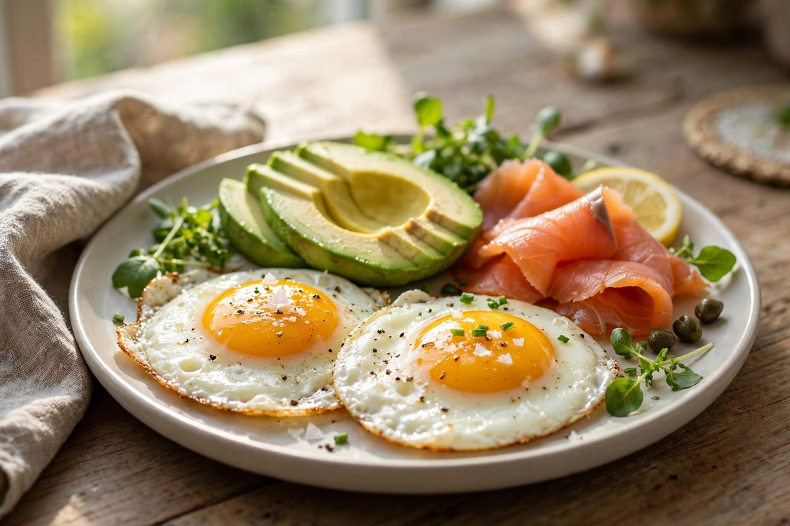

Home › Guides
Low-Carb Breakfast: 10 Ideas That Are Not Cereal

Breakfast is the hardest meal on a low-carb diet, because most breakfast foods are built on carbs: cereal, toast, pastries, and juice. Take those away and many people stare into the fridge and wonder what is left. The answer is plenty. Eggs, yoghurt, fish, and leftovers all make excellent breakfasts, and most of them take less than ten minutes.
Eggs, every way
Eggs are the best low-carb breakfast food. They are cheap, filling, and almost carb-free. Scrambled eggs with spinach and feta take five minutes. An omelette with mushrooms and cheese is a full meal. Hard-boiled eggs, made the night before, are the fastest breakfast there is.
Try shakshuka, eggs poached in a spiced tomato sauce, for a weekend breakfast. Or make a frittata on Sunday and eat slices cold through the week. Eggs are versatile, and they keep you full until lunch, which is the point of breakfast.
Yoghurt, berries and nuts
Greek yoghurt with a handful of berries and a spoonful of nuts is a quick, satisfying breakfast. Choose full-fat yoghurt with no added sugar, and check the label, because flavoured yoghurts can contain as much sugar as a dessert.
Chia pudding is another good option: mix chia seeds with coconut milk and leave it overnight, then top with raspberries in the morning. It is high in fibre, filling, and easy to prepare the night before.
Fish and leftovers
Smoked salmon with cream cheese and cucumber is a classic low-carb breakfast, and it takes two minutes to assemble. In many countries, breakfast is savoury, and there is no rule that says breakfast must be sweet or eggy.
Leftovers are an underrated breakfast. Last night's roast chicken, a slice of frittata, or a bowl of soup are all fine in the morning. Eating leftovers saves time and money, and it stops food going to waste.
Busy mornings and eating out
For busy mornings, prepare breakfast the night before. Overnight chia pudding, hard-boiled eggs, and pre-cut vegetables all help. Keep a few emergency options at work, such as nuts and cheese, so a missed breakfast does not become a pastry from the cafe.
When eating out, order eggs and skip the toast, or ask for a yoghurt with berries instead of cereal. Most cafes will swap toast for extra vegetables or avocado. A black coffee or a coffee with cream is a better choice than a sweetened latte.
Breakfasts for the week
A week of low-carb breakfasts can be simple. Monday: scrambled eggs with spinach. Tuesday: Greek yoghurt with berries and walnuts. Wednesday: an omelette with mushrooms and cheese. Thursday: chia pudding made the night before. Friday: smoked salmon with cream cheese and cucumber. Saturday: a frittata with vegetables. Sunday: shakshuka with feta.
Each one takes less than fifteen minutes, and most of them can be prepared the night before. Rotate the list, swap ingredients, and keep a few emergency options, such as hard-boiled eggs, in the fridge. A planned breakfast is a good breakfast.
Frequently Asked Questions
What can I eat for breakfast without bread or cereal?
Eggs, Greek yoghurt with berries, smoked salmon, chia pudding, or leftovers. All are low in carbs and quick to make.
Is fruit juice okay at breakfast?
No. Fruit juice is high in sugar and has almost no fibre. Eat whole berries instead, and drink water or tea.
Can I skip breakfast on a low-carb diet?
Yes, if you are not hungry. Many people on low-carb diets skip breakfast naturally. Eat when you are hungry, not by the clock.